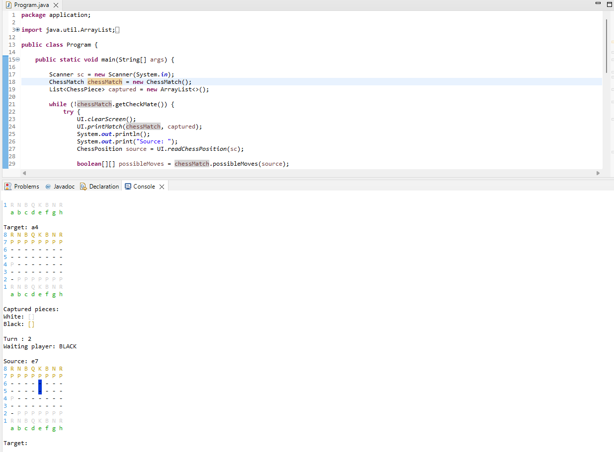
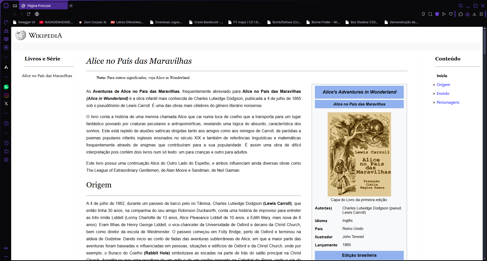

Sobre mim
Tenho 22 anos, sou estudante de Análise e Desenvolvimento de Sistemas pela Unicesumar, atualmente no antepenúltimo semestre da graduação. Trabalho como assistente de TI na empresa Sportive, onde atuo com consultas, atualizações e criação de tabelas em SQL, além de participar do desenvolvimento de sistemas internos.
Sou apaixonada por tecnologia e estou sempre em busca de novos aprendizados. Tenho interesse especial pelo desenvolvimento back-end, mas também estou constantemente explorando outras áreas como front-end e banco de dados, buscando me tornar uma profissional completa.
Além das habilidades técnicas, valorizo muito o trabalho em equipe, a organização e a resolução de problemas. Tenho facilidade em compartilhar conhecimento, sei treinar pessoas e atualmente já atuo como tutora na minha equipe. Estou construindo minha carreira com dedicação e entusiasmo, e meu objetivo é crescer profissionalmente contribuindo para projetos desafiadores e inovadores.
Seja bem-vindo(a) ao meu portfólio!! Aqui você encontrará um pouco da minha trajetória, habilidades e projetos!
Projetos
Chess System Java

Jogo de xadrez completo implementado em Java, executado no terminal. O projeto foi desenvolvido com base em programação orientada a objetos e boas práticas de modelagem, como herança, composição e encapsulamento. Inclui regras de movimentação, verificação de xeque, xeque-mate e captura de peças. Ideal para consolidar lógica, estruturação de classes e domínio do Java puro.
Bank System Java
Sistema bancário simples criado em Java para simular operações como saque, depósito, transferência e consulta de saldo. Utiliza princípios de orientação a objetos, abstração e encapsulamento. O projeto roda no console e é uma ótima aplicação prática para fixar lógica de negócios e fluxo de operações em ambientes simulados.
Recriando Wikipedia

Projeto front-end desenvolvido como desafio da DIO, com o objetivo de recriar a página principal da Wikipedia utilizando apenas HTML e CSS. O projeto reforça conhecimentos em estrutura semântica, responsividade e fidelidade visual com atenção aos detalhes. Excelente exercício para desenvolver habilidades em web design e replicação de interfaces.